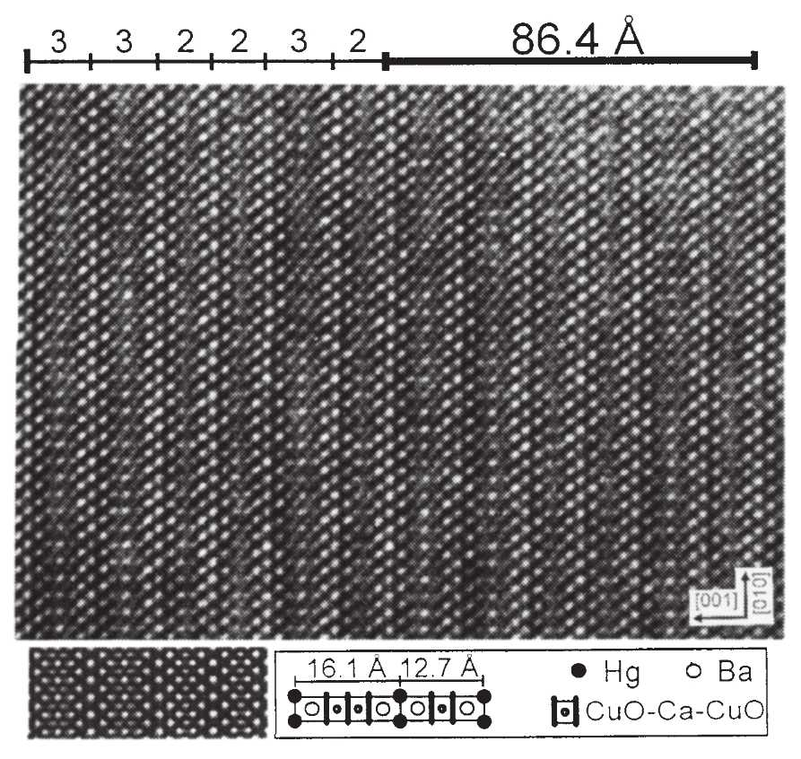
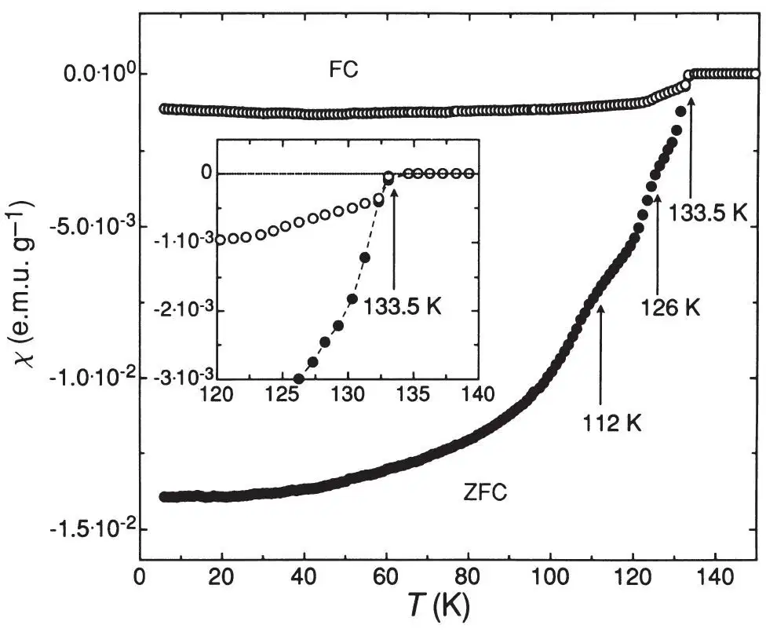
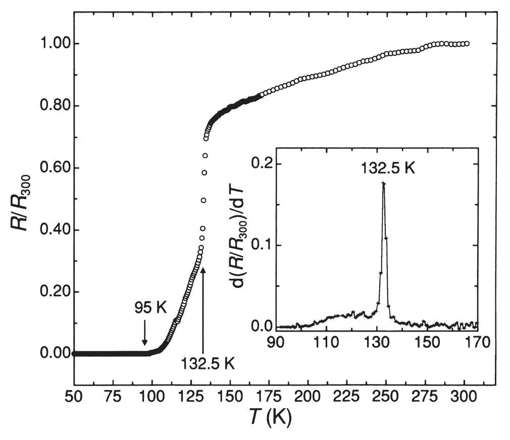

中文
中文A. Schilling et al.
Editor’s Note
In 1986, physicists in Switzerland discovered a ceramic material that became superconducting at temperatures below about 30 K when doped with impurities. Hitherto, many physicists suspected that superconductivity would be impossible above about 20 K, and the discovery of so-called high-temperature superconductivity kicked off a race both to explain the effect and to design new materials with even higher transition temperatures (Tc). By 1993, the record had reached 125 K; here Andreas Schilling and colleagues improve on that with a material having a Tc of 133 K. Since then the record for copper-oxide materials has been raised to 138 K. But a definitive theory to explain the phenomenon remains an outstanding problem in physics. 中文
The recent discovery1 of superconductivity below a transition temperature (Tc) of 94 K in HgBa2CuO4+δ has extended the repertoire of high-Tc superconductors containing copper oxide planes embedded in suitably structured (layered) materials. Previous experience with similar compounds containing bismuth and thallium instead of mercury suggested that even higher transition temperatures might be achieved in mercury-based compounds with more than one CuO2 layer per unit cell. Here we provide support for this conjecture, with the discovery of superconductivity above 130 K in a material containing HgBa2Ca2Cu3O1+x (with three CuO2 layers per unit cell), HgBa2CaCu2O6+x (with two CuO2 layers) and an ordered superstructure comprising a defined sequence of the unit cells of these phases. Both magnetic and resistivity measurements confirm a maximum transition temperature of ~133 K, distinctly higher than the previous established record value of 125–127 K observed in Tl2Ba2Ca2Cu3O10 (refs 2, 3). 中文
THE structural similarity of HgBa2CuO4+δ (Hg-1201, ref. 1) to a member of the thallium-containing family of copper oxides, TlBa2CuO5 (Tl-1201), suggests the existence of compounds with the general composition HgBa2Can-1CunO2n+2+δ.The transition temperatures of the thallium-containing analogues, TlBa2Can-1CunO2n+3, range from<10 K (n=1, ref. 4) to ~110 K (n=3, ref. 5). In this sense, transition temperatures exceeding 100 K may be expected also in the Hg–Ba–Ca–Cu–O (HBCCO) system. Although the successful synthesis of HgBa2RCu2O6+x (Hg-1212) with R being (Eu, Ca) has been reported, no superconductivity was found in that system6. 中文
We prepared the samples following the procedure described in ref. 1 for Hg-1201. A precursor material with the nominal composition Ba2CaCu2O5 was obtained from a well ground mixture of the respective metal nitrates, sintered at 900 ℃ in O2. After regrinding and mixing with powdered HgO, the pressed pellets were sealed in evacuated quartz tubes. These tubes were placed horizontally in tight steel containers and held at 800 ℃ for 5 hours. On opening the containers, we found that the quartz tubes were broken. It was not possible to reconstruct at which stage of the heating, cooling or opening procedure this happened. Some of the pellets were finally annealed for 5 hours at 300 ℃ in flowing oxygen. During the preparation and the characterization of the samples, all possible measures were taken to avoid any contamination with toxic mercury or mercury-containing compounds. 中文
After annealing, the resulting black material was characterized by X-ray diffraction using the Guinier technique, by energy-dispersive X-ray spectrometry (EDS), and by selected-area electron-diffraction techniques (SAED) and high-resolution transmission electron microscopy (HRTEM). The EDX analysis showed that the samples are composites of isolated grains of BaCuO2 (~30%), CuO (~30%), an unidentified oxide containing Hg, Ca and Cu (~15%), an oxide with Ca and Cu (~5%), and ~5% impurities with unspecified composition. About 15% of the total sample volume consisted of plate-like grains containing Hg, Ba, Ca and Cu. Some of these were investigated in detail by SAED and HRTEM techniques on a Phillips CM 30-ST transmission electron microscope. Both techniques showed clearly that these identified grains consist mostly of pure HgBa2Ca2Cu3O8+x (Hg-1223), disordered mixtures of Hg-1223 and Hg-1212, and a periodic stacking sequence of the latter unit cells. We found no grains or intergrowths associated with the Hg-1201 structure. As the volume fraction of the phases of interest is fairly small, we could not measure the lattice parameters precisely with the X-ray Guinier technique. Nevertheless, from the SAED patterns, we deduce the lattice constants c=12.7(2) Å and c=16.1(3) Å for the tetragonal Hg-1212 and Hg-1223 units, respectively, and a=3.93(7) Å, valid for both types of compounds. The results for Hg-1212 are in good agreement with the values obtained in ref. 6. Figure 1 is a representative HRTEM image showing, as an example, a stacking containing both Hg-1212 and Hg-1223 layers. The stacking sequence 1223/1223/1212/1212/1223/1212 with a supercell c-axis c≈86.4 Å extends beyond 2,000 Å, thus qualifying this superstructure as a proper phase. HRTEM images as well as SAED patterns gave no evidence for the presence of HgO-double layers. 中文

Fig. 1. HRTEM image of a grain in [100] orientation, containing layers of Hg-1212 and Hg-1223. Here, they are stacked in a periodic sequence forming a supercell with c≈86.4 Å (see text). A contrast simulation (cs=1.1 mm, E=300 keV, defocus -870 Å, specimen thickness 23 Å) is inserted. The stacking sequence in terms of the number of Cu–O planes and an enlarged schematic drawing of the involved unit cells are included. 中文
We measured the magnetic susceptibility of the specimens using a SQUID-magnetometer (Quantum Design). Figure 2 shows the result obtained for an oxygen-annealed sample. In an external field H=27 Oe, the zero-field cooling susceptibility (ZFC) amounts to ~100% of 1/4π at temperature T=6 K, indicating complete magnetic screening. For this estimate, we assumed an average density  ≈6 g cm－3. The field-cooling (FC) susceptibility reaches ~10% of the maximum possible value. This value represents a lower-bound value for the true superconducting volume fraction in the sample, indicating the bulk nature of superconductivity. The onset temperature of diamagnetism is Tc≈133.5 K, seen both in FC and ZFC experiments (see Fig. 2, inset). The FC susceptibility reaches ~60% of its full low-temperature value at 125 K, strongly indicating that the phase with Tc≈133.5 K dominates all other superconducting phases. In the ZFC curves, additional features are seen at 126 K and 112 K, which we ascribe to different superconducting phases with lower transition temperatures. 中文
≈6 g cm－3. The field-cooling (FC) susceptibility reaches ~10% of the maximum possible value. This value represents a lower-bound value for the true superconducting volume fraction in the sample, indicating the bulk nature of superconductivity. The onset temperature of diamagnetism is Tc≈133.5 K, seen both in FC and ZFC experiments (see Fig. 2, inset). The FC susceptibility reaches ~60% of its full low-temperature value at 125 K, strongly indicating that the phase with Tc≈133.5 K dominates all other superconducting phases. In the ZFC curves, additional features are seen at 126 K and 112 K, which we ascribe to different superconducting phases with lower transition temperatures. 中文

Fig. 2. Zero-field cooling (ZFC) and field cooling (FC) susceptibilities χ(T) of one of the investigated oxygen-annealed HBCCO samples, measured in H=27 Oe. The ZFC curve indicates the presence of several different superconducting phases. 中文
The resistivity R as a function of temperature T of an annealed sample is shown in Fig. 3. At T≈132.5 K, R(T) drops sharply with a maximum in the differential dR/dT, and reaches zero at T=95 K within the resolution of the four-probe a.c.-resistance bridge used. This temperature is still considerably higher than the zero-resistance temperature T≈35 K, reported for Hg-1201 (ref. 1) The final oxygen treatment was very effective in increasing the critical temperature; the as-sintered samples showed a maximum Tc of only ~117 K. 中文

Fig. 3. Resistivity R(T) of an annealed HBCCO specimen, normalized with respect to the resistance value R(300)≈0.10 Ω. The inset displays the temperature derivative dR/dT to show the maximum resistivity drop at T≈132.5 K. Zero resistance is attained at T=95 K. 中文
At present we cannot relate the different superconducting phases to crystallographic phases. There is no unambiguous proof that the occurrence of superconductivity in our samples stems from the HgBa2Can-1CunO2n+2+δ phases. In analogy with the thallium- and bismuth-based copper oxides5, however, we suggest that in the HBCCO system Tc also increases with the number of Cu–O planes per unit cell, and conclude that Hg-1223 is responsible for superconductivity at ~133 K. This would be consistent with the large relative superconducting volume fraction at 125 K, in view of the dominance of Hg-1223 observed in the grains investigated microscopically. 中文
(363, 56-58; 1993)
A. Schilling, M. Cantoni, J. D. Guo & H. R. Ott
Laboratorium für Festkörperphysik, ETH Hönggerberg, 8093 Zürich, Switzerland
Received 14 April; accepted 15 April 1993.
References:
1. Putilin, S. N., Antipov, E. V., Chmaissem, O. & Marezio, M. Nature 362, 226-228 (1993).
2. Kaneko, T., Yamauchi, H. & Tanaka, S. Physica C178, 377-382 (1991).
3. Parkin, S. S. P. et al. Phys. Rev. Lett. 60, 2539-2542 (1988).
4. Gopalakrishnan, I. K., Yakhmi, J. V. & Iyer, R. M. Physica C175, 183-186 (1991).
5. Parkin, S. S. P. et al. Phys. Rev. Lett. 61, 750-753 (1988).
6. Putilin, S. N., Bryntse, I. & Antipov, E. V. Mat. Res. Bull. 26, 1299-1307 (1991).
Acknowledgements. We thank S. Ritsch for his help in the structural characterization. This work was supported in part by the Schweizerische Nationalfonds zur Förderung der wissenschaftlichen Forschung.